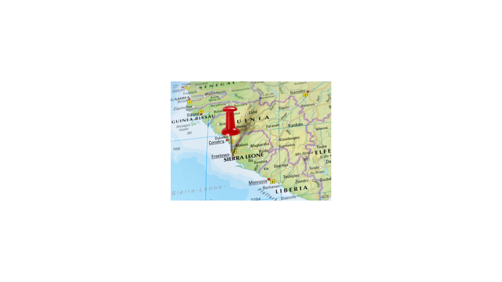
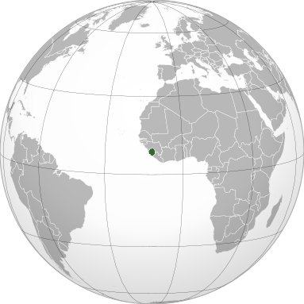
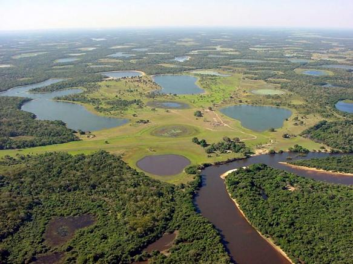
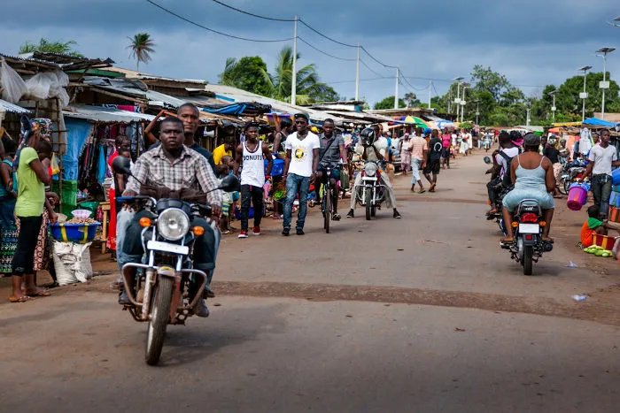

Guerra Civil Serra Leoa
INTRODUçãO
Localizada na áfrica Ocidental, a República da Serra Leoa é um país rico em recursos naturais, principalmente em minerais como: o diamante, o ferro, a platina, o rutilo e a bauxita; mas contraditoriamente, o seu índice de desenvolvimento humano (IDH) é 0,452 e o seu PIB per capita é apenas US$ 484,52, sendo assim, ele é considerado um dos países mais pobres do mundo. O grande número de diamantes presentes nessa região pode ser considerado uma de suas maiores riquezas mas, ao mesmo tempo, a sua grande maldição que influenciou muitos conflitos em seu território.
Localização:
fonte: canva


{kind=link}
Principais produtos de exportação de Serra Leoa em 2019 (em inglês):

https://pt.wikipedia.org/wiki/Serra_Leoa#/media/Ficheiro:Sierra_Leone_Product_Exports_(2019).svg
.svg&sa=D&source=editors&ust=1675427023603309&usg=AOvVaw2qqrmjkkcFI8yi5cgLfD1R){kind=link}
O TERRITóRIO SERRA-LEONêS
Apesar de apresentar uma extensão territorial de 71.740 quilômetros quadrados, o que é relativamente pequeno, a Serra Leoa é rica em biodiversidade, apresentando um clima tropical e uma vegetação formada por mangues pantanosos e extensas praias que surgem ao longo das costas, rios, montanhas, prados, bosques e savanas nas planícies interiores. Estas áreas servem de habitat para várias espécies, incluindo primatas (como o chimpanzé e o macaco colobus), mamíferos terrestres e marinhos (por exemplo, o antílope bongo), aves e répteis (crocodilo, tartaruga marinha). Além disso, a Serra Leoa possui um dos maiores e mais produtivos recursos haliêuticos da região.

https://meioambiente.culturamix.com/natureza/clima-relevo-vegetacao-e-hidrografia-de-serra-leoa

A língua oficial do país é o inglês, que convive com outras línguas nacionais importantes, como o mende e o temne. Com uma população de 3 786 000 habitantes, sua etnia é composta por: mendes (34,6%), temmes ( 31,7%), limbas (8,4%), conos (5,2%), bulones (3,7%), peules (3,7%), corancos (3,5%), ialuncas (3,5%), quisis (2,3%), outros (3,4%). A maioria da sua população são leoneses e cerca de 4000 libaneses, 500 indianos, 2000 europeus residem no país e 2% é representado pelos “Krio”, descendentes de escravos libertos. Além disso, 45,9% da sua população segue a religião islâmica, 11% o cristianismo, outros 40,4% são adeptos às crenças tradicionais africanas, e outros 2% sem religião.
O território serra-leonês é dividido em 4 regiões administrativas (Província do Norte, Província do Sul, Província do Leste, Província do Noroeste e área do Oeste) a sua capital está localizada na cidade de Freetown.
A HISTóRIA DA SERRA LEOA
Antes de sua colonização o território serra-leonês era habitado por diversos povos tradicionais que formavam grandes reinos independentes. Os primeiros exploradores de Serra Leoa foram os portugueses. A grande riqueza natural, atrelada ao comércio de marfins e escravizados, atraiu os europeus, que se fixaram no litoral do país. Com o aumento da influência do Império Britânico e a partir do declínio do comércio de escravizados, Serra Leoa se tornou colônia inglesa até 1961, quando finalmente conquistou sua independência.
Assim como muitos outros países do continente africano, a Serra Leoa ainda sofre e luta contra os traumas que foram deixados pela colonização europeia, que realizou a partilha do território africano sem considerar as divergências étnicas existentes. Desse modo, os territórios estabelecidos pelas nações europeias separaram povos de mesma característica histórico-cultural e juntou povos rivais desrespeitando e invadindo a sua cultura, religião e espaço. Tal iniciativa produziu instabilidade política, que resultou em diversos conflitos entre grupos étnicos rivais mesmo após a independência.
A guerra civil desse país é de fato um dos maiores reflexos do seu processo de colonização e independência, motivada pelas disputas territoriais, golpes de estado, disputa por recursos minerais e pela imersão do povo na miséria.
Após a sua independência, o país não tinha infraestrutura política e econômica necessária para se erguer e a sua população era basicamente composta por ex-escravos. Assim, durante 1991 e 2022, a guerra civil, iniciada pela FRU (Frente Revolucionário Unida), grupo de cidadãos insatisfeitos com o abuso do poder e corrupção do governo do presidente do Josehp Momoh, eles tinham como objetivo um golpe de estado.
OS DIAMANTES DE SANGUE
A URF usava os diamantes para financiar a guerra (eram usados para comprar os armamentos para a guerra), para isso, eles expulsaram a população da área que queria dominar, no caso, as zonas diamantíferas. O slogan: “Sem escravos, sem mestres. Poder e riqueza ao povo” era usado como estratégia para convencer a população a lutar pela causa da revolução. Apesar dos revolucionários se dizerem ser a favor da democracia, não aceitavam ideias contrárias e usavam da extrema violência para alcançar os seus objetivos. O abuso sexual era utilizado como arma de guerra e a mutilação intencional de civis era a marca registrada da FRU. Enquanto isso, os diamantes eram comercializados livremente no mercado mundial.
Além disso, o grupo rebelde também recrutavam crianças a estimulavam o uso de drogas e álcool, tornando este público vulnerável e fácil de manipular.
SERRA LEOA ATUALMENTE
Apesar de anos após a guerra civil, centenas de milhares de pessoas sofrem de estresse pós-traumático, ataques epiléticos ou sofrem de abuso de drogas em consequência dos traumas desse conflito. Enquanto isso, os políticos pedem para a população esquecer e focar no desenvolvimento econômico do país, mas o desemprego juvenil é de cerca de 95%, sendo que quase metade da população do país tem menos de quinze anos de idade.
Por outro lado, existem sinais pequenos, mas significativos de que a economia está começando a se recuperar. Especialmente chineses estão mostrando interesse no setor mineiro e no seu potencial de manufatura.
Portanto, Serra Leoa contraditoriamente às riquezas naturais se tornou também por isso um país marcado pela destruição da guerra, pela mutilação de civis e pelo atraso aos direitos humanos.
Os diamantes, que deveriam ser fonte de riqueza, foram a causa da miséria e destruição. Um país marcado pela opressão causada pela ambição da riqueza.